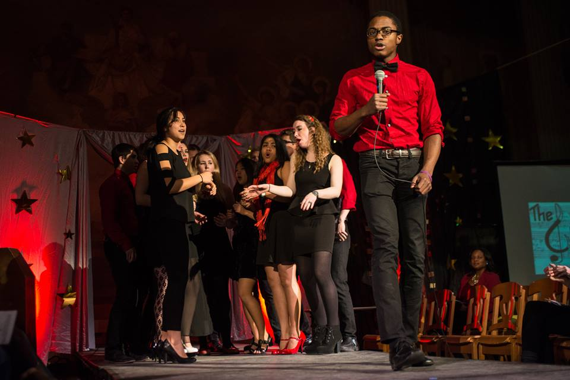
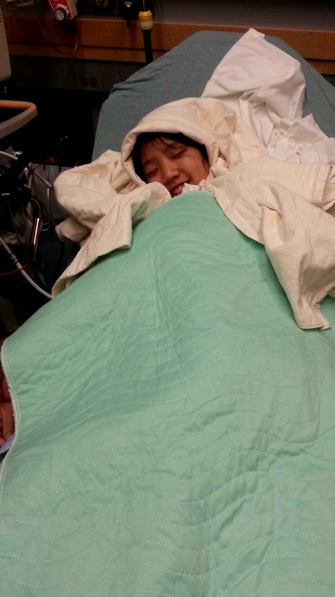

Hey Jungmoney!!
Bet you weren't expecting this, right? I didn't take that web programming class for nothing. Keep your sound on because I've included some audio. Press right to continue!
Navigation
Take a look at the arrows in the bottom right corner. These indicate which way you can move through the website. In addition to clicking on these arrows, you can also use the direction keys on your keyboard. Try it out by going down.
Note
For the best experience, please scroll down all the way whenever possible before proceeding to the right.
Yay!
Awesome, now you know how to use this website. Please continue to the right for cool stuff. Hope you like it!
It's been crazy
So much has happened in the past few weeks of my life! You entered out of nowhere and I've never been happier. I'm so glad I met you :)
Thank You For...
- ... taking care of me when I'm stressed
- ... doing all sorts of fun stuff with me
- ... making me so happy all the time
- ... just being a part of my life :)
What i love about you
Everything! But in particular...
You're so musical
I love that you're passionate about it! You are amazing at piano, you have a beautiful voice, and I love the way you dance to pump-up music. Even though I'm not as talented, music is a big part of my life too and I'm glad it's so important to you.
So much fun
Yo it's so great that you're down for whatever. I love going out and doing stuff, and I'm glad that I can do that with you. Whether it's working out, partying, being a fatass, or anything else, I know we'll have fun doing it together.
We have lots in common
Dude we love all the same shit. High five!
You're smart
Damn girl, Stuy and MIT?? I see you acing those 18.02 tests :P You're a nerd and that's pretty hot.
You're kind and sweet
I love that you care about me so much!
Did I mention you're cute?
;)
Sorry...
I got a bit lazy with those last few slides. Was gonna write some really sweet stuff but it's 3AM and I'm tired. Besides, you already know what I mean lol
Let's remember good times
It's only been a month but we've already made some pretty great memories...
We've studied hard
Okay, maybe not that hard
Actually...
I don't think I've studied that much at all
I'll probably need to fix this lol
We've been total fatasses
After Trashion
Pho in Harvard Square
At Sebastians
In the dorm
Even with shitty
dining hall food
But with good food too
We've worked out
So it's slightly more okay that we are fatasses
We've watched a
bunch of movies


We've done fun
stuff on campus
Katwalk
Trashion Show
Piano Recital
Logs Show
ADT Show

We've partied!!!
That time at ZBT
Sometimes we go a
little too hard...

Christmas in NYC!
Rockefeller Center
Trump Tower
FAO Schwarz
Fifth Avenue
I love you
Thanks for all the happy memories :)
Here's to even better times in 2015!